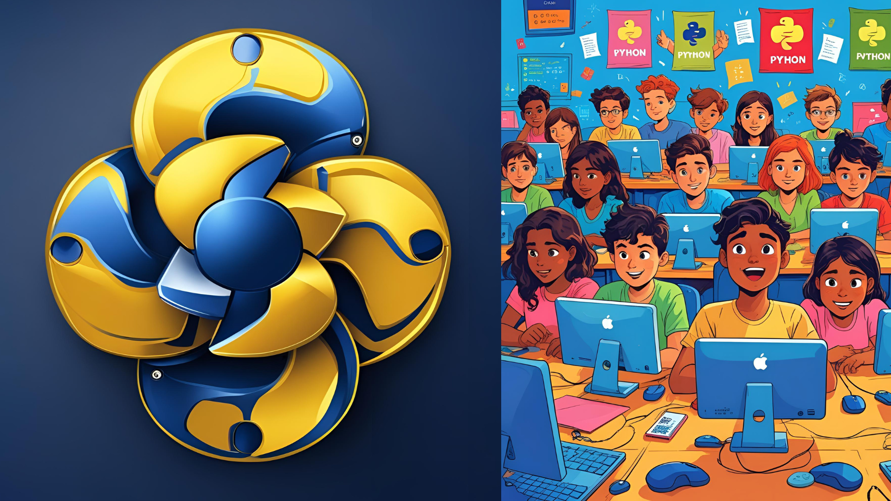
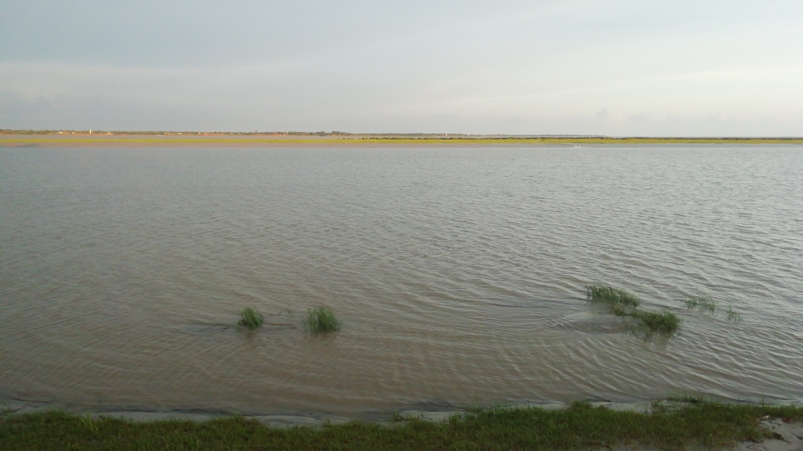

Hi, I'm Sayan
A Passionate Learner
I’m a self-driven developer with a knack for crafting modern, user-friendly, and responsive web applications. With a deep interest in technology, creativity, and solving real-world problems, I turn ideas into functional digital experiences. Let’s build the future—one line of code at a time.
View My WorkMy Work

Shared OTT Platform
(Functional)
This project is a functional "Over-the-Top" (OTT) platform designed for sharing subscription costs. It allows users to access multiple streaming services like Netflix, Prime Video, Spotify, and YouTube Premium through a single interface, effectively reducing individual subscription expenses. The platform appears to manage and provide access to these shared accounts in a consolidated manner.
View Project
AI Tools List +
Learning AI
This project is a curated directory and explorer for various AI tools. It serves as a centralized resource for users to discover and learn about the best artificial intelligence tools available for different needs. The platform aims to simplify the process of finding specific AI solutions for various projects or tasks.
View Project
Government Website Recplica
This project is a replica of a government website for a fictional state called "The Republic of Nenasa." It showcases the ability to create a professional and official-looking government portal, complete with sections for messages from the president, citizen services, public notices, and news. The focus is on demonstrating the technical skills required to build a structured and navigable public-facing website.
View ProjectMy Blogs

Journey of programming
This blog post explores the dynamic and evolving world of programming. Using visuals that represent both the structured logic of coding and the collaborative, diverse community of learners, the article likely discusses the personal and collective journey of acquiring programming skills. The key takeaway for the reader is likely an insight into the challenges, rewards, and continuous learning process involved in becoming and being a programmer in today's tech landscape.
Read More
A River Runs Through It
This blog post takes a more reflective and possibly metaphorical approach, titled "A River Runs Through It." Accompanied by a serene image of a wide river, the post likely draws parallels between the constant, flowing nature of a river and themes of life, nature, or personal experience. The key takeaway for the reader might be a reflection on persistence, the passage of time, or finding peace and meaning in the natural world.
Read MoreAbout Me
Hello! My name is Sayan Maity, and I'm a budding software developer based in Tamluk. I discovered my passion for programming by self-learning and building projects, and I'm excited by the endless possibilities that technology offers.
Next month, I'll be taking the next step in my journey by starting college. I am eager to learn, collaborate, and contribute, with the goal of turning my passion into a meaningful career. When I'm not coding, I enjoy reading sci-fi and tinkering with new hardware.